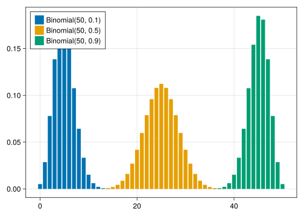
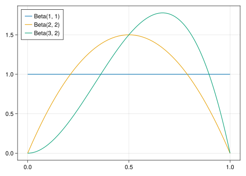
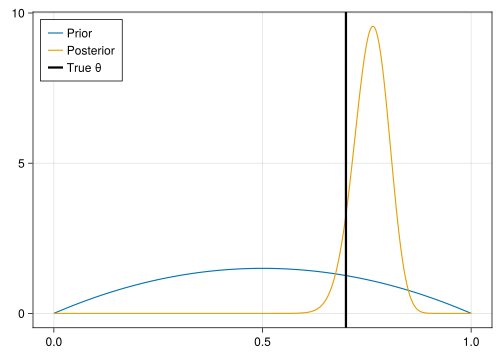
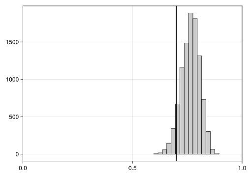
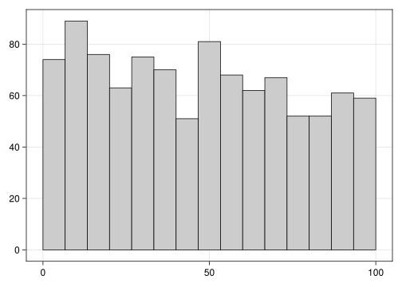
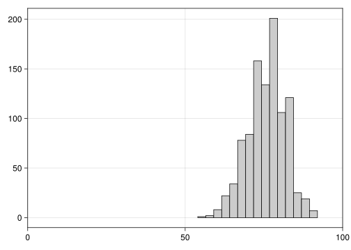

using StatsBase
function simulate_globe(θ, N)
outcomes = ["W", "L"]
probabilities = [θ, 1-θ]
sample(outcomes, Weights(probabilities), N)
end
simulate_globe(0.7, 5)5-element Vector{String}:
"W"
"L"
"W"
"W"
"W"Week 1: Globe Tossing
This writeup loosely follows Richard McElreath’s Statistical Rethinking YouTube lecture and book of the same name. As a programming environment it uses Julia (instead of R, as used in the lecture). Julia has a variety of packages on probabilistic programming and Bayesian inference, such as Turing.jl, LogDensityProblems.jl, or Stan.jl. This writeup focuses more on the technical implementation and assumes that the reader has followed the lecture for background and reasoning.
Bayesian inference departs from a model for the joint distribution of all observed variables (data, \(\mathcal{D}\)) and unobserved variables (parameters, \(\theta\)):
\[ p(\theta, \mathcal{D}) = p(\mathcal{D}|\theta)p(\theta) \]
The factorization on the right hand side is a direct consequence of the definition of conditional probability (see box below).
Bayesian inference then relies on Bayes’ rule (from which it derives its name) to derive the posterior distribution of parameters \(\theta\) conditional on observed data \(\mathcal{D}\):
\[ p(\theta | \mathcal{D}) = \frac{p(\mathcal{D}|\theta)p(\theta)}{p({\mathcal{D}})} \]
Bayes Rule is just a restatement of the general definition of conditional probability:
\[\mathrm{Pr}(A|B) := \frac{\mathrm{Pr}(A,B)}{\mathrm{Pr}(B)}\]
The numerator here is the joint probability, i.e. the probability that both events \(A\) and \(B\) occur. The joint probability is also sometimes written as \(p(A \cap B)\) (an intersection in set notation) and is symmetric with respect to its arguments: \[\mathrm{Pr}(A,B) = \mathrm{Pr}(A|B)\mathrm{Pr}(B) = \mathrm{Pr}(B|A)\mathrm{Pr}(A)\] If we now replace the joint probability by the its conditioned representation in the definition above, we arive at Bayes Rule: \[\mathrm{Pr}(A|B) = \frac{\mathrm{Pr}(B|A)\mathrm{Pr}(A)}{\mathrm{Pr}(B)}\]
In the context of Bayes’ rule, \(p(\mathcal{D}|\theta)\) (taken as a function of \(\theta\) and not \(\mathcal{D}\)) is called the likelihood and specifies how the data influence our inferences. \(p(\theta)\) is called the prior and formalizes our beliefs on the parameters before having seen the data (which might derive from earlier studies or common sense).
We start by writing a simple program which can simulate the globe tossing experiment. In this case, this just involves sampling ‘water’ or ‘land’ \(N\) times, with probabilities \(\theta\) and \(1-\theta\), respectively:
using StatsBase
function simulate_globe(θ, N)
outcomes = ["W", "L"]
probabilities = [θ, 1-θ]
sample(outcomes, Weights(probabilities), N)
end
simulate_globe(0.7, 5)5-element Vector{String}:
"W"
"L"
"W"
"W"
"W"Because in the end we just care about the count of ‘water’ throws among the \(N\) trials and the sum of independent Bernoulli trials is well modeled by the binomial distribution, we can also just use that to simulate our experiment:
using Distributions
simulate_globe_binomial(θ, N) = rand(Binomial(N, θ))
simulate_globe_binomial(0.7, 5)5Following the general process of Bayesian inference outlined above, we need a representation of the joint distribution of known and unknown variables, which we can factor into two components: (1) a sampling distribution that describes how the known variables are generated for given values of the unknowns and (2) a prior distribution over the unknowns.
Sampling distribution. The data generating process for the globe tossing example is well represented by a binomial sampling model, which specifies a distribution for the number of ‘successes’ (called \(y\), say occurrences of water) among a number of \(N\) trials, each with the same success probability \(\theta\). To indicate that the random variable \(y\) follows a binomial distribution, we write:
\[ y \sim \mathrm{Binomial}(N, \theta)\]
Computing the probability of an observed number of successes \(y\) for a given \(\theta\) is then given by the probability mass function of the binomial distribution:
\[ p(y|\theta) = \mathrm{Binomial}(y | N, \theta) = {N \choose y} \theta^y (1-\theta)^{N-y},\]
where \({N \choose y} = \frac{N!}{y!(N-y)!}\) is called the binomial coefficient. In the context of the posterior distribution, where the right hand side of the above serves as the likelihood and is taken as a function of \(\theta\), the binomial coefficient is constant (because it does not depend on \(\theta\)), which is helpful in analytical derivations.
Here is a plot of the binomial distribution for different values of \(\theta\), with \(N=50\):
using CairoMakie
function plotbinom(params)
tostring(p) = "Binomial(50, $(p.θ))"
fig = Figure()
ax = Axis(fig[1,1])
foreach(params) do p
d = Binomial(50, p.θ)
barplot!(ax, d; cycle=:color, label=tostring(p))
end
axislegend(ax; position=(:left, :top))
fig
end
params = [(;θ=0.1), (;θ=0.5), (;θ=0.9)]
plotbinom(params)
Prior distribution. A natural prior for the parameter \(\theta\) is the beta distribution, which is defined for the interval \([0,1]\) and thus fits the bounds of \(\theta\) (which represents a proportion). The distribution has two paramteres, commonly called \(\alpha\) and \(\beta\), which control its shape.
The probability density function for the beta is given by:
\[ p(\theta) = \textrm{Beta}(\theta | \alpha, \beta) = \frac{\Gamma(\alpha + \beta)}{\Gamma(\alpha)\Gamma(\beta)}\theta^{\alpha - 1} (1-\theta)^{\beta - 1} \]
The factor involving the gamma functions \(\Gamma(\cdot)\) is a normalizing constant ensuring that the pdf integrates to 1 over the sample space. Here is a plot of the pdf with different values for \(\alpha\) and \(\beta\):
function plotbeta(params)
tostring(p) = "Beta($(p.α), $(p.β))"
fig = Figure()
ax = Axis(fig[1,1])
foreach(params) do p
d = Beta(p...)
plot!(ax, d; cycle=:color, label=tostring(p))
end
axislegend(ax; position=(:left, :top))
fig
end
params = [(;α=1, β=1), (;α=2, β=2), (;α=3, β=2)]
plotbeta(params)
Posterior distribution. The posterior distribtution is proportional to the prior times the likelihood (which is just the factored joint distribution):
\[ p(\theta|\mathcal{D}) \propto p(\mathcal{D}|\theta)p(\theta) \]
For many analytical and numerical procedures the normalizing constant \(p(\mathcal{D}\)) can be dropped. We here also make use of this fact to analytically derive the closed form posterior distribution. This is not generally possible, which is why numerical applications are so important in Bayesian inference.
Following the choices above, the unnormalized posterior distribution is then the product of a binomial likelihood and a beta prior:
\[ \begin{align} p(\theta|\mathcal{D}) &\propto \textrm{Binomial}(y|N, \theta) \times \textrm{Beta}(\theta|\alpha, \beta) \\ &= {N \choose y} \theta^y (1-\theta)^{N-y} \frac{\Gamma(\alpha + \beta)}{\Gamma(\alpha)\Gamma(\beta)}\theta^{\alpha - 1} (1-\theta)^{\beta - 1} \end{align} \]
While this looks intimidating at first, it is just the definitions for the binomial and beta pdf (or pmf) multiplied together. Just as we started by dropping the normalizing constant for the posterior distribution, we can now again drop the constants from the beta and binomial probability functions (i.e., everything not involving \(\theta\), such as the binomial coefficient and the gamma functions):
\[ \begin{align} p(\theta|\mathcal{D}) &\propto \theta^y (1-\theta)^{N-y} \theta^{\alpha - 1} (1-\theta)^{\beta - 1} \\ &= \theta^{y + \alpha - 1}(1-\theta)^{N-y+\beta-1} \end{align} \]
The result is the kernel of a beta distribution (i.e. a beta without the normalizing constant), from which we can conclude that the posterior is just another beta distribtution where the \(\alpha\) and \(\beta\) hyperparameters from the original prior distribution are updated based on the data, i.e.:
\[ \theta | y \sim \textrm{Beta}(\alpha + y, \beta + N - y)\]
Wrapped into a Julia function, this is a single line of code:
globe_posterior(y, N; α=2, β=2) = Beta(α + y, β + N - y);With this, we’re now ready to run a simple simulation with, say, \(N=100\) throws:
function plot_prior_posterior(prior, posterior, true_θ)
fig = Figure(); ax = Axis(fig[1,1])
plot!(ax, prior; label="Prior", cycle=:color)
plot!(ax, posterior; label="Posterior", cycle=:color)
vlines!(ax, true_θ; label="True θ", linewidth=3, color=:black)
axislegend(ax; position=(:left, :top))
fig
end;true_θ = 0.7; N = 100
throws = simulate_globe(true_θ, N)
y = sum(==("W"), throws)
prior = Beta(2,2)
posterior = globe_posterior(y, N)
plot_prior_posterior(prior, posterior, true_θ)
Based on this, we can see how our diffuse prior on the proportion of water has been updated based on the data to a posterior that sits close to the true value of \(\theta = 0.7\).
A different way to obtain the posterior distribution, relying on numerical approximation, is to compute the joint distribution (likelihood \(\times\) prior) at a fine grid of values and then normalize this by dividing by the sum of the computed values.
joint(N, y, θ) = pdf(Beta(1,1), θ) * pdf(Binomial(N, θ), y)
function posterior_approx(N, y; P=1000)
grid = range(0, 1, P)
points = [joint(N, y, θ) for θ in grid]
posterior = points ./ sum(points)
sample(grid, Weights(posterior), 10_000; replace=true)
end
post = posterior_approx(N, y)
hist(post; color=:grey80, strokewidth=1)
vlines!(true_θ; color=:black, linewidth=2)
xlims!(0, 1); current_figure()
While this approach does not rely on mathematical conveniences such as conjugacy, it suffers from the curse of dimensionality: The number of grid points grows exponentially with the number of parameters and so grid approximation is only suited for very simiple problems.
Often times, we are interested in the range of outcomes that would be reasonable to expect for a given prior or posterior distribution, i.e., the prior or posterior predictive distribution. Seeing how the model behaves for a given prior or posterior distribution is useful for model & research design, for model checking and validation, or for making forecasts.
A particularly practical way to obtain the prior or posterior predictive distribution is via sampling many times from the prior or posterior and then for each sampled parameter value simulate an outcome from the observation model.
For the globe tossing example this could look like the following julia function:
function predictive(N, prior_or_posterior; S=1000)
simulate(θ, N) = rand(Binomial(N, θ))
samples = rand(prior_or_posterior, S)
[simulate(θ, N) for θ in samples]
end;We can now use this to check what kinds of results the model would deem reasonable in an experiment with 100 globe throws, before seeing any data and just based on a flat \(\textrm{Beta}(1,1)\) prior:
priorpred = predictive(100, Beta(1,1))
hist(priorpred; color=:grey80, strokewidth=1)
This indicates that, under the flat prior, a result of 0 out of 100 times water is seen as similarly likely as, e.g., 50 out of 100 times water, which is probably not that sensible.
We can perform a similar excercise but now based on the posterior distribution:
postpred = predictive(100, posterior)
hist(postpred; color=:grey80, strokewidth=1)
xlims!(0, 100); current_figure()
Consistent with the posterior distribution centered at 0.7, we can see that the model now expects around 70 out of 100 throws to result in ‘water’ and both values lower than 50 or close to 100 are deemed very unlikely.